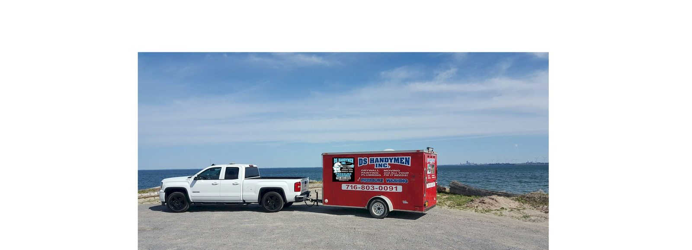

Service Area · Hamburg, NY
Hamburg is home. Literally.
Dave has lived here for 50 years. He's plowed the village side streets, washed siding off Lake Shore Road, and raked half of Boston Hills' leaves. When a lake-effect band lines up over Eighteen Mile Creek, our phones ring first.
What Hamburg calls us for
- Snow plowing — the village, Big Tree, Lakeview and out toward the fairgrounds. Hamburg sits square in the snow belt; seasonal contracts fill fast.
- Pressure washing — lake air is hard on siding. Cottages near Hamburg Beach see us every spring.
- Landscaping & fall clean-up — mature village trees mean serious leaf season and gutters that need October attention.
- Remodeling — older village homes with good bones; windows, basements, kitchens.
Around the Erie County Fair? Book early — half the Southtowns has the same idea that week.
